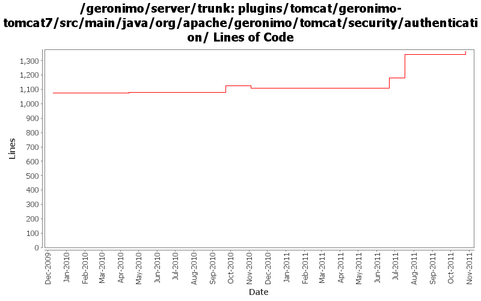

[root]/plugins/tomcat/geronimo-tomcat7/src/main/java/org/apache/geronimo/tomcat/security/authentication
 jaspic
(2 files, 268 lines)
jaspic
(2 files, 268 lines)

| Author | Changes | Lines of Code | Lines per Change |
|---|---|---|---|
| Totals | 29 (100.0%) | 488 (100.0%) | 16.8 |
| xiaming | 4 (13.8%) | 305 (62.5%) | 76.2 |
| djencks | 6 (20.7%) | 100 (20.5%) | 16.6 |
| xuhaihong | 17 (58.6%) | 63 (12.9%) | 3.7 |
| rwonly | 1 (3.4%) | 19 (3.9%) | 19.0 |
| genspring | 1 (3.4%) | 1 (0.2%) | 1.0 |
add missed license headers
19 lines of code changed in 1 file:
GERONIMO-5651 Enable SPNEGO support, provided by ShengHao Fang
163 lines of code changed in 1 file:
GERONIMO-6058 Replace StringBuffer usage with StringBuilder
1 lines of code changed in 1 file:
GERONIMO-5652 Add the correct GenericHeaderAuthentictor.java file
71 lines of code changed in 1 file:
Remove bad file of generic header enablement
0 lines of code changed in 1 file:
GERONIMO-5652 add a missing file of generic header enablement
71 lines of code changed in 1 file:
GERONIMO-5662 Make the restore request function works
0 lines of code changed in 1 file:
No function change, format the codes, recover some log outputs and remove unused codes
52 lines of code changed in 1 file:
GERONIMO-5662 fail to replace default Security Realm, patch from Viola.
1 lines of code changed in 1 file:
Update codes due to recent changes in Tomcat trunk
2 lines of code changed in 2 files:
GERONIMO-5468 Based on an original patch by Han Hong Fan. Support authenticate and login/logout methods in HttpServletRequest interface. may need some tidying up
100 lines of code changed in 6 files:
a. Use Map.Entry for the loop
b. Remove some excess cast action
1 lines of code changed in 1 file:
Incorrect auth type is returned for client cert, replace all the return value with the static variable in the HTTPServletRequest
4 lines of code changed in 6 files:
Support ServletSecurity annotation scan, some more work might need for it while adding Servlet dynamically
3 lines of code changed in 1 file:
GERONIMO-4980 Use Tomcat 7 in Geronimo 3.0
0 lines of code changed in 4 files: